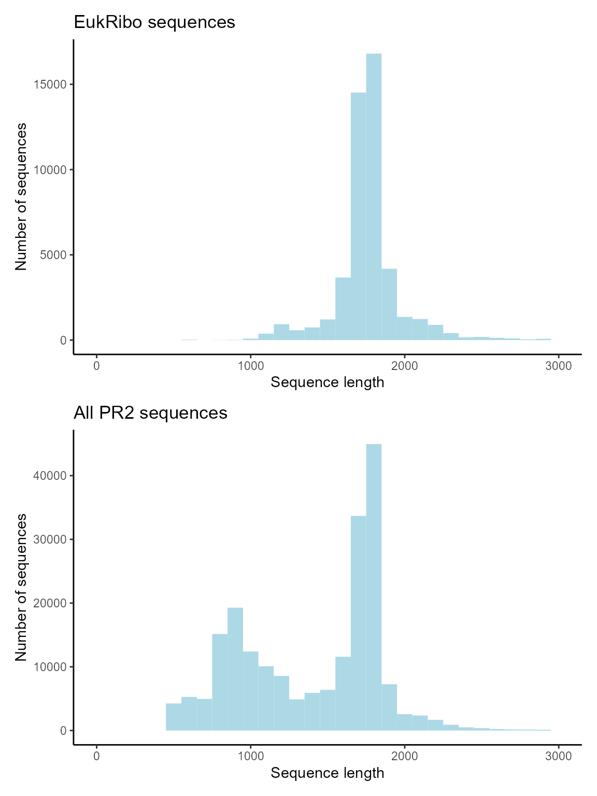
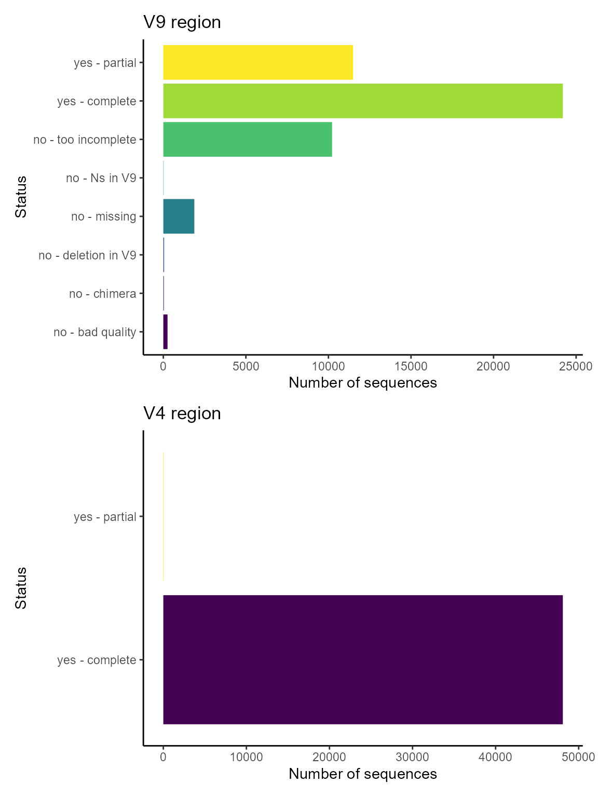
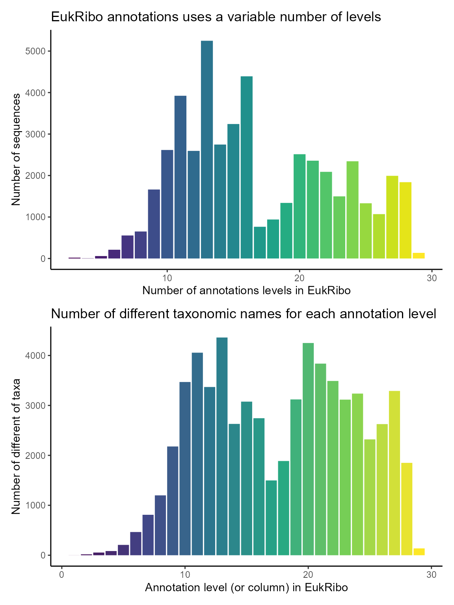
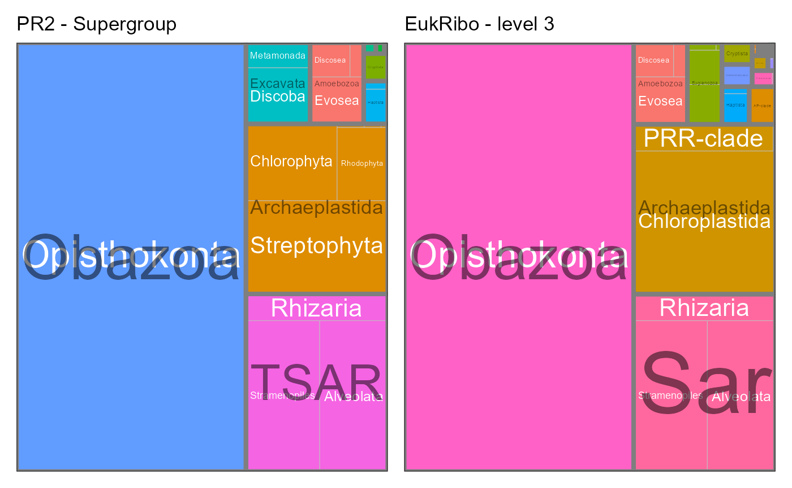

EukRibo is a new database that has developed by Berney et al. (2023) and available from Zenodo.
EukRibo is characterized by a very high quality of annotation.
From version 5.0.0 PR2 incorporate three fields from the EukRibo database.
- eukribo_UniEuk_taxonomy_string: Taxonomy assignment from EukRibo database
- eukribo_V4: Information about presence and completeness V4 region from EukRibo database
- eukribo_V9: Information about presence and completeness V9 region from EukRibo database
In this small tutorial we explain how to extract the EukRibo annotations from PR2.
Reference
- Berney, Cédric, Nicolas Henry, Frédéric Mahé, Daniel J. Richter, et Colomban de Vargas. 2022. EukRibo: A Manually Curated Eukaryotic 18S RDNA Reference Database to Facilitate Identification of New Diversity. Preprint. BiorXiv. https://doi.org/10.1101/2022.11.03.515105.
# Loading the necessary packages
library("ggplot2")
library("dplyr")
library("tidyr")
library("DT")
library("forcats")
library("stringr")
library("treemapify")
library(patchwork)
library("pr2database")
packageVersion("pr2database")
#> [1] '5.0.0'
# Read the PR2 database
pr2 <- pr2_database() %>%
# Only keep 18S (do not consider plastids)
filter(gene == "18S_rRNA")Extracting from PR2 the sequences annotated with EukRibo
The taxonomy of EukRibo is annotated as a single string that requires some processing to match PR2 taxonomy structure.
# Split the field eukribo_UniEuk_taxonomy_string into individual columns
taxo_ranks_pr2 = c("division", "supergroup", "division", "subdivision", "class", "order",
"family", "genus", "species")
taxo_ranks_eukribo = str_c("rank_eukribo_", 1:29)
pr2_eukribo <- pr2 %>%
select(pr2_accession, any_of(taxo_ranks_pr2), contains("eukribo"), sequence_length) %>%
# Remove sequences for which we have no taxonomy from Silva
filter(!is.na(eukribo_UniEuk_taxonomy_string)) %>%
# Remove "g:" in front of the genus level
mutate(eukribo_UniEuk_taxonomy_string = str_replace(eukribo_UniEuk_taxonomy_string, "[|g:]", "|"),
# Count the number of EukRibo taxonomy levels for each sequence
eukribo_levels = str_count(eukribo_UniEuk_taxonomy_string, "[|]") + 1) %>%
# Split Silva taxonomy into 20 individuals columns
separate(col = eukribo_UniEuk_taxonomy_string, into = taxo_ranks_eukribo,
sep = "[|]", remove = FALSE)
Total number of PR2 sequences with EukRibo annotation : 48145
EukRibo mostly contains long sequences
g1 <- ggplot(pr2_eukribo) +
geom_histogram(aes(sequence_length), binwidth = 100, fill="lightblue") +
xlim(0,3000) +
xlab("Sequence length") +
ylab("Number of sequences") +
ggtitle("EukRibo sequences") +
theme_classic()
# Plot hist of status for V4
g2 <- ggplot(pr2) +
geom_histogram(aes(sequence_length), binwidth = 100, fill="lightblue") +
xlim(0,3000) +
xlab("Sequence length") +
ylab("Number of sequences") +
ggtitle("All PR2 sequences") +
theme_classic()
g1 / g2
V4 and V9 regions in PR2 as annotated by EukRibo
Almost all sequences annotated by EukRibo contain the V4 region and only half the V9 region
# Plot hist of status for V4
g1 <- ggplot(pr2_eukribo) +
geom_bar(aes(x = eukribo_V4, fill = as.factor(eukribo_V4))) +
labs(title = "V4 region",
y = "Number of sequences",
x = "Status") +
theme_classic() +
scale_fill_viridis_d() +
guides(fill=FALSE) +
coord_flip()
# Plot hist of status for V4
g2 <- ggplot(pr2_eukribo) +
geom_bar(aes(x = eukribo_V9, fill = as.factor(eukribo_V9))) +
labs(title = "V9 region",
y = "Number of sequences",
x = "Status") +
theme_classic() +
scale_fill_viridis_d() +
guides(fill=FALSE) +
coord_flip()
g2 / g1
The annotation by EukRibo database allows you to select sequences from a taxonomic group that contain the full V9 region.
Only 13 sequences of the green alga Micromonas contains the complete V9 region.
Structure of EukRibo annotations
In contrast to PR2, EukRibo does not have a fixed number of taxonomy levels. The maximum number of levels is 29. We compute the number of number of levels for each sequences and for each level the number of distinct names in that column
# Plot number of levels for each sequence
g1 <- ggplot(pr2_eukribo) +
geom_bar(aes(x = eukribo_levels, fill = as.factor(eukribo_levels))) +
labs(title = "EukRibo annotations uses a variable number of levels",
y = "Number of sequences",
x = "Number of annotations levels in EukRibo") +
theme_classic() +
scale_fill_viridis_d() +
guides(fill=FALSE)
# Compute and plot number of different names for each level of EukRibo (column)
pr2_eukribo_taxa <- pr2_eukribo %>%
select(rank_eukribo_1:rank_eukribo_29) %>%
summarise_all(~ n_distinct(.)) %>%
pivot_longer(cols = contains("eukribo"),
names_to = "level",
values_to = "n_taxa_names") %>%
mutate(level = as.integer(str_replace(level, "rank_eukribo_", "")))
g2 <- ggplot(pr2_eukribo_taxa) +
geom_col(aes(x = level, y = n_taxa_names, fill = level)) +
labs(title = "Number of different taxonomic names for each annotation level",
y = "Number of different of taxa",
x = "Annotation level (or column) in EukRibo") +
theme_classic() +
scale_fill_viridis_c() +
guides(fill=FALSE)
g1 / g2
Comparison of taxonomic composition between PR2 and EukRibo
# Define a function for treemaps
pr2_treemap <- function(pr2, level1, level2) {
# Group
pr2_class <- pr2 %>%
count({{level1}},{{level2}}) %>%
filter(!is.na({{level2}})) %>%
ungroup()
# Do a treemap
ggplot(pr2_class, aes(area = n, fill = {{level2}},
subgroup = {{level1}}, label = {{level2}})) +
treemapify::geom_treemap()
ggplot(pr2_class, aes(area = n, fill= {{level1}},
subgroup = {{level1}}, label = {{level2}})) +
treemapify::geom_treemap() +
treemapify::geom_treemap_text(colour = "white",
place = "centre", grow = TRUE) +
treemapify::geom_treemap_subgroup_border() +
treemapify::geom_treemap_subgroup_text(place = "centre", grow = T,
alpha = 0.5, colour = "black",
min.size = 0) +
theme_bw() +
scale_color_brewer() +
guides(fill = FALSE)
}PR2 supergroup level
EukRibo level 3 corresponds roughly to PR2 level 2 (supergroup). But this is not true for all taxa.
g1 <- pr2_treemap(pr2_eukribo, supergroup, division) +
labs(title = "PR2 - Supergroup")
g2 <- pr2_treemap(pr2_eukribo, rank_eukribo_3, rank_eukribo_4) +
labs(title = "EukRibo - level 3")
g1+ g2